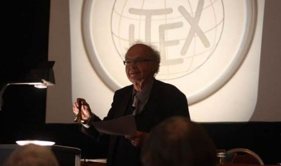

Премии и награды
1971 — Премия имени Грейс Мюррей Хоппер
1972 — Стипендия Гуггенхайма[15]
1974 — Премия Тьюринга
1978 — Гиббсовская лекция
1979 — Национальная научная медаль США
1980 — Премия Уоллеса Макдауэлла
1986 — Премия Стила за серию научно-популярных статей
1988 — Медаль Франклина
1992 — Мемориальные лекции Вейцмана
1995 — Премия Харви
1995 — Медаль Джона фон Неймана
1996 — Премия Киото за достижения в области передовых технологий
1998 — Fellow Awards
2010 — BBVA Foundation Frontiers of Knowledge Awards
2011 — Медаль Фарадея
2011 — Лекция Тьюринга[англ.]
2016 — Лекция Джона фон Неймана
Существует премия его имени за вклад в основы информатики.